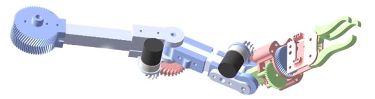
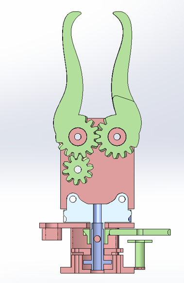
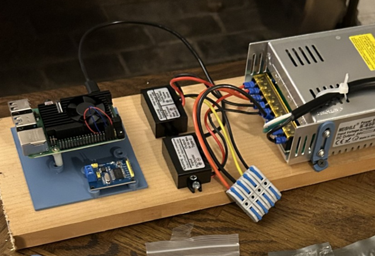
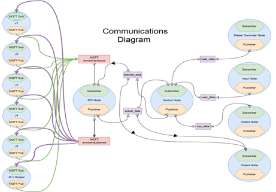
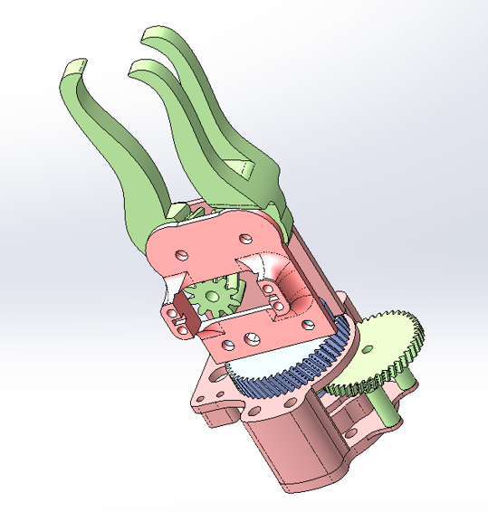

Jesse Gill Saligman
LuMAR: 7-DOF Modular Robotic Arm
NASA RASC-AL Senior Design Platform | 2025

🛰️ Overview
Inspired by NASA’s RASC-AL challenge, my senior design team created a lunar maintenance rover with a modular advanced manipulator, a custom chassis, and distributed control — built for adaptability, repairability, and upgradeability.
The project was a test platform for modularity, control, and systems integration — not a hardened lunar system. Every element was designed with modularity in mind: only four wires (HV+/–, LV+/–) run from the chassis to the arm, distributing power to each joint’s independent controller. This minimized wiring complexity and enabled hot-swapping of components. While not space-grade, the prototype provided a hands-on validation environment for ideas in full-stack robotics.
📸 Project Highlights
I was team leader and led all mechanical, electrical, coding, prototyping, and testing work. The rest of the team focused on documentation and outreach, while I built and integrated the actual hardware and software systems.
The concept was inspired by RASC-AL’s call for long-term lunar servicing platforms. We explored several directions before settling on a modular robotic arm mounted to a chassis. The arm’s modularity allows for easy upgrades and repairs — a feature that would be vital for years of service on the Moon. We decided to use ROS 2 to support autonomy and communication structure, and I built the entire stack to simulate real-world deployment.

🦿 Mechanical Design
We started by analyzing different joint layouts to minimize singularities. I calculated all forces, moments, and required torques based on a desired payload and arm reach. Then, I designed and rapidly prototyped each joint one by one.
The arm’s structure is built around a 1” x 1” aluminum tube spine, with each joint 3D-printed using PLA, PETG, or ABS depending on stress requirements.
- Joints are designed to be fully modular, each attaching independently to the central spine.
- I originally designed a 3D-printed harmonic drive to increase torque and reduce backlash, but it was cut due to time.
- We intended to build all 6 joints and a gripper (J1–J6 + gripper), but completed J3–J6 + gripper before the deadline.
- Potentiometers were used for joint feedback due to budget constraints, and we calibrated them ourselves using regression to convert resistance to angle.
- For torque estimates, we assumed motor weights early to avoid circular dependency between motor choice and structural load. Later, we verified that selected motors were within our bounds.
🛠️ Special Note on J6 + Gripper
J6 was an axial joint, already tough to design — but we needed more than 270° rotation, so I geared down the potentiometer to achieve ~600° range. We used axial thrust bearings and radial bearings to fully constrain it, while keeping the entire joint hollow for wire passthrough to the servo-powered gripper.
⚡ Electronics
Each joint has its own microcontroller, powered by a shared 4-wire snake (HV+/– and LV+/–). Joints can be added or removed with no changes to the system — they just tap into the same power line and connect to the existing wireless network.
🔧 Joint Electronics

- ESP8266 microcontroller (runs MicroPython, CircuitPython caused issues with PID)
- Potentiometer for angle feedback
- Motor driver and DC gearmotor
- Connects to Wi-Fi, receives desired position, runs local PID, reports actual position over MQTT
⚙️ Chassis Electronics
- 12V and 24V power supplies
- Buck converters for 5V and 3.3V rails
- Fuse protection
- Raspberry Pi as command/control center (hostapd, dnsmasq, mosquitto)
🧠 Software & Control
The robot uses a distributed system with a Raspberry Pi hosting the network and relaying commands via MQTT to each joint. The Pi can operate in position or velocity mode depending on how the user wants to control the robot.
The Raspberry Pi hosts its own Wi-Fi network using hostapd, dnsmasq, and mosquitto. You connect to it from a laptop, SSH in, and start the control script.
- Commands can come from a connected Xbox controller (velocity mode) or from the terminal (position mode).
- ROS 2 was used for simulation, logging, and input/output — while MQTT handled real-time joint communication.
🔄 Communication Protocol
There are three types of MQTT messages, all shaped like this:
[DR, DL, J3, J4, J5, J6, J7] (Drive Right, Drive Left, Joint 3–6, Gripper)
- Controller Data: From Xbox → PC → Pi. This is live joystick input as a float from -1 to 1 per joint.
- Desired Data: If in velocity mode: Controller input is converted to 'V<value>' like V0.65. If in position mode: User can type j4 45 and the system sends 'P45.00'.
- Actual Data: Each ESP sends back its current position, which the Pi collects and formats into a full bracket.
📡 ESP Logic
- Each ESP connects to the network, listens for its value in the “desired” bracket,
- If it’s a P<angle>, it runs PID toward that angle
- If it’s a V<velocity>, it drives the motor at that speed with soft stops
- Sends current angle (converted from potentiometer) to the Pi
🔧 Prototyping & Assembly
Because joints are fully independent, I could test and assemble each one individually — avoiding the classic “integration hell.”
- We began from the end-effector side and worked backward: gripper, J6, then J5 and so on.
- The software was already running and didn’t care how many joints were connected — joints just ignored brackets that didn’t apply to them.
- Each joint was flashed, wired, and PID-tuned independently, then mounted onto the arm one by one.
- Internal wire routing and fast-swap mounting points made hardware iteration fast.
🔁 Takeaways & Future Work
LuMAR is being passed on to future Drexel teams to serve as a platform for continued development and as a teaching tool for robotics and controls.
- Our advisor plans to use the arm to demonstrate PID tuning concepts to students in controls labs.
- Future plans include: Adding J1/J2 to complete 7-DOF, improving drivetrain gearing/housing, swappable end-effectors, enhanced autonomy/simulation.
- I wrote full documentation and setup guides to help future students extend the system.